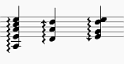
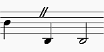
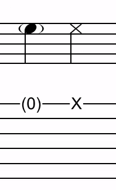
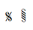
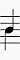

术语表
以下列出的是 MuseScore 或本手册中经常使用的技术术语和音乐术语。提供了指向相关手册章节的链接。为帮助能够阅读乐谱但不知道其正确名称的音乐家，提供了图片。本章并不旨在成为所有乐谱记号的词典，参见外部链接。
美式英语和英式英语之间的差异分别用 "(AE)" 和 "(BE)" 标记。本章的编辑和翻译人员应为每个术语添加单独的条目。
A
- Acciaccatura

一种短的倚音，表现为带符干斜线的小音符。Musescore 创建快速的播放，播放时值不受主音符时值的影响。 * Accidental
变音记号是出现在音符前面、升高或降低其音高的记号。参见输入音符和休止符：变音记号章节。Musescore 只为常见的变音记号创建播放，包括升号、降号、还原号、重升号、重降号和三重降号。要创建四分音等微分音变音记号，请参见调律系统、微分音记谱系统与播放章节。 * Ambitus
在谱表中使用的音符（或人声）音域。尤其用于早期音乐。参见音域章节。 * Anacrusis (mostly BE)
参见弱起小节。 * Anchor
文本和线条等对象附着到乐谱上的点：拖动对象时，锚点显示为通过虚线连接到对象的小棕色圆圈。根据所选对象的不同，其锚点可能附着到 (a) 一个音符（例如指法）、(b) 一条谱线（例如谱表文本）或 (c) 一条小节线（例如反复）。 * Appoggiatura
一种长的倚音，从其所依附的音符中取值。MuseScore 会相应地创建播放。如今将记谱的长倚音演奏为短倚音也是可以接受的，但 MuseScore 不会创建这样的播放。长倚音的功能包括：经过音、先现音、延留音和逸音。\

- Arpeggio
琶音告诉演奏者将和弦分解为组成音符，逐个依次演奏。带箭头的琶音符号指示演奏者演奏和弦音符的方向。参见琶音与滑音章节。\

- Articulation
指示音符应如何演奏的标记或符号，通常通过改变音符的长度或塑造其起音和衰减。参见演奏记号章节。
B
- Bar (BE)
参见小节。 * Barline
贯穿谱表、多个谱表或整个系统的垂直线，用于分隔小节。参见小节线章节。 * Beam
时值为八分音符或更短的音符要么带符尾，要么带符杠。符杠用于将音符分组。另请参见法式符杠。参见符杠章节。 * BPM
仅在 MuseScore 播放工具栏中使用的速度显示单位。BPM 是一分钟内应有的四分音符数量。它不是乐谱上节拍器速度标记中使用的数字。参见播放控件章节。 * Breve, or Brevis
倍全音符或 breve 是时值为两个全音符的音符。
C
- Caesura
停顿（//）是一种短暂、无声的停顿。此期间不计时，音乐在指挥示意时恢复。参见换气与停顿章节。\

- Capo (text)
用于指示乐器上移调装置设置的文本。参见应用变调夹。请勿与 Da capo (D.C.) 混淆。 * Cent
等于半音百分之一的音程，用于音符的调律属性。参见属性面板章节。 * Chord * 1. 两个或更多音符同时发声的一组。 * 2. 在 Musescore 中，只有在一个 Musescore 声部内同时发声且时值相同的音符才构成和弦。要在 MuseScore 中选择和弦，请按 Shift 并单击一个音符。参见使用多个声部章节。 * 3. 在 Musescore 中，指和弦符号。参见和弦符号章节。 * Clef
用于指示 →谱表上的线和间代表哪些音符的音乐符号。参见谱号章节。另请参见提示谱号。 * Coda
```

``` * Concert pitch * 1. 音符的实际发声音高——相对于记谱音高。参见使用移调乐器章节。 * 2. Musescore 中的一种乐谱查看模式，参见状态栏中的实音框章节。 * 3. A4 的频率。 * Courtesy clef
应用于系统末尾的缩小尺寸的谱号，指示下一系统开头将发生谱号变更。参见谱号章节。 * Cross-staff notation
- 横跨两个相邻谱表的音乐片段：例如低音谱表和高音谱表。 *
```

```
- 要创建两个符干位于符杠相反两侧的记谱，如上所示，请参见跨谱表记谱章节。 *
```

```
- 要创建符干位于符杠同一侧的记谱，如上所示，请参见如何让和弦或符干横跨两个谱表章节。
- Crotchet (BE)
参见四分音符。
D
- Da capo (D.C.)
重复音乐先前部分的指令。参见跳转与标记章节。请勿与 capo (text) 混淆。 * Dead note
参见幽灵音符。 * Demisemiquaver (BE)
三十二分音符。 * Double Flat
重降号（♭♭ 或 𝄫）是指示音符音高降低两个半音的记号。 * Double Sharp
重升号（♯♯ 或 𝄪）是指示音符音高升高两个半音的记号。 * Duplet
参见连音。 * Dynamic, dynamics, dynamic symbol, dynamics symbol
指示音符或音乐乐句相对响度的符号——例如 mf（中强）、p（弱）、f（强）等，从该音符开始生效。参见力度记号章节。
E
- Edit mode, text edit mode
用于编辑调整文本的字面排版位置和内容，与普通模式和音符输入模式相对。参见直接调整元素和输入和编辑文本：编辑文本对象内容章节。 * Eighth note
时值为全音符（semibreve）八分之一的音符。与 quaver（BE）相同。 * Endecalineo\ *
```

```
- Endecalineo 或 endecagram，用于视唱练耳 (Solfège) 的谱表。参见唱名法（MuseScore 3 教程，待更新）
- Endings
参见反复跳房子。 * Enharmonic notes
发音音高相同但记谱不同的音符。例如：G♯ 和 A♭ 是等音音符。要快速在等音拼写之间切换，请按 J。参见输入音符和休止符章节。 * Explode\ *
```

```
F
- Flag
参见符杠。 * Flat
指示音符音高降低一个半音的记号 (♭)，参见变音记号和调号。 * French Beam\ *
```

```
- 符干只延伸到第一根符杠、而不贯穿所有符杠的符杠。要创建请使用 French Beams 插件。
G
- Ghost note
在音乐中，尤其是在爵士乐中，幽灵音符（或 dead、muted、silenced 或 false note）是具有节奏值、但演奏时没有可辨音高的音符。Musescore 支持叉形符头（交叉符头）、菱形符头（与 MuseScore 3 相同的小菱形）、斜线/菱形符头（MuseScore 4 新增），以及为音符添加括号，参见符头章节。\

\

- Grace note
倚音表现为正常大小主音符前面的小音符。参见短倚音和长倚音。参见倚音章节。 *
* Grand Staff(AE)
* Great Stave (BE)
一种带两个或更多谱表的[乐器](glossary.md#instrument)，具有高音谱号和低音谱号，用于为键盘乐器和竖琴记谱，在 MuseScore 中：由花括号连接的任意数量的谱表。
H
- Half Note
时值为全音符（semibreve）一半的音符。与 minim（BE）相同。 * Hemidemisemiquaver (BE)
六十四分音符。
I
- Implode\ *
```


```
两个音符之间的音高差异，以音级程度表示（例如大二度、小三度、纯五度等）。参见音级（音乐）（维基百科）。 * Interleaved\ *
```

```
- 用于描述两组相互交错、符杠方向相反的音符的术语。要创建，请使用声部功能和符杠面板。参见交错的符杠方向
- Instrument
- 1. Musescore 乐器，参见设置您的乐谱章节。
- 2. 现实世界中的乐器
- Irregular measure marker\ *
```

```
J
- Jump
跳转对象是“反复与跳转”面板中的记号，例如 "D.S. al Coda"。参见跳转与标记章节。
K
- Key Signature
谱表开头的一组升号或降号。它给出有关调性的概念，并避免在整个谱表中重复这些记号。带降 B 的调号意味着 F 大调或 D 小调。参见调号章节。
L
- Legato
Legato（连奏）是一种以连贯方式演奏音符的演奏风格。Legato 可以写成文本，也可以通过使用连音线来体现。 * Local time signature

\ 单个谱表上的拍号，与整个乐谱的拍号不同。参见为单个谱表添加局部拍号。 * Longa
长音符是一个四倍全音符。 *
* Ledger Line(AE)
* Leger Line (BE)
添加在谱表上方或下方的音符所用的线。
- Line
Musescore 线条，一种能够附着（锚定）到两个以上音符或休止符的水平连续范围，或音符（和弦）的垂直集合的对象类型。参见其他线条章节。
M
- Measure (AE)
由给定拍数定义的一段时间。将音乐划分为小节为定位乐曲中的位置提供了规则的参考点。与 bar（BE）相同。 * Measure repeat sign
小节反复记号看起来像一个两个圆圈都被填充的“百分号”，或一条两侧各有一个点的斜线。参见小节反复与多小节反复章节。\

- Metronome mark
一种速度标记。参见速度标记。 * Minim (BE)
参见二分音符。 * Multimeasure rest
参见小节休止符与多小节休止符章节。\

N
- Natural
还原号 (♮) 是取消同一音高音符上先前变化的记号，参见 →变音记号和 →调号。 * Normal mode
MuseScore 在音符输入模式或编辑模式之外的操作模式：按 Esc 进入。在普通模式下，您可以浏览乐谱、选择和移动元素、调整属性面板属性以及更改现有音符的音高。 * Note input mode
用于输入乐谱记谱的程序模式，与普通模式和编辑模式相对。按 N 或单击音符输入工具栏中的笔形图标进入。参见输入音符和休止符章节。
O
- Operating System (OS)
控制和管理计算机硬件及其他软件的底层软件。常见的操作系统有 Microsoft Windows、macOS 和 GNU/Linux。 * Ossia\ *
```

```
- 可代替原段落演奏的备选段落（源自意大利语 "alternatively"，意为“或者”）。参见Ossia章节。
P
- Part
- 1. Musescore 的自动分谱提取功能，参见分谱。
- 2. 复调音乐作品中的单条旋律线。MuseScore 4 从不使用此定义，但有一个类似的功能声部。
- 3. 乐器或其谱表。MuseScore 4.1.1 仅在窗口标题和“谱表/分谱属性”中的一个子标题上使用此定义。
- Pickup Measure (mostly AE, also known as an Anacrusis (mostly BE) or Upbeat)
一首作品或一个乐段的不完整的第一小节。参见小节时值、创建新乐谱：弱起小节和小节属性：不计入小节数章节。可能在乐谱或乐段末尾进行或不进行补偿。 * Properties * 1. Musescore 中乐谱上单个对象的设置，与样式（配置文件）相对。 * 2. Musescore 的面板，参见属性面板章节。
Q
- Quadruplet
参见连音。 * Quarter note
时值为全音符（semibreve）四分之一的音符。与 crotchet（BE）相同。 * Quaver (BE)
参见八分音符。 * Quintuplet
参见连音。
R
- Respell Pitches
更改音符上使用的变音记号，但保持音符的音高不变。参见输入音符和休止符：变音记号章节。 * Rest
表示静默的音乐符号。参见输入音符和休止符章节。 * Re-pitch mode
音符输入模式之一。替代音符输入方法：重设音高模式
S
- Score
- 1. 在 MuseScore 支持论坛和 MuseScore 手册中，score（乐谱）通常指后缀为 .mscz 的计算机文件——以及它在计算机屏幕上的视觉表示和音频播放。
- 2. 在 MuseScore 手册的某些章节中，score 指“完整乐谱”或某个特定 Musescore 分谱的排版和格式化。参见 Musescore 分谱。
- 3. 在其他上下文中（例如 IMSLP 乐谱分享网站 https://imslp.org），score 通常指特定作品乐谱的 PDF 文件或实际的纸质乐谱副本。
- Section
在 MuseScore 中，指乐谱中乐段分隔符之间的区域；也包括从乐谱开头到第一个乐段分隔符，以及从最后一个乐段分隔符到乐谱末尾。 * Segno

一种导航标记。参见跳转与标记章节。 * Semibreve (BE)
一个全音符（AE）。在 4/4 拍中持续一整个小节。 * Semiquaver (BE)
十六分音符。 * Semihemidemisemiquaver (Quasihemidemisemiquaver) (BE)
一百二十八分音符。 * Sextuplet
参见连音。 * SF2
由 E-mu Systems 和 Creative Labs 开发的虚拟乐器格式。参见SoundFont。 * SF3
Werner Schweer（Musescore 开发者）的发明（来源）。此格式支持声音采样压缩。参见SoundFont。 * Shared note head

一个带有两条符杠（一条向上、一条向下）的单个符头。例如在吉他音乐中尤为常见。参见符头 * Sharp
指示音符音高升高一个半音的记号 (♯)，参见变音记号和调号。 * Slash (slash chord, slash notehead)
指示扫弦。参见斜线和弦（维基百科）。 * Slash notation
一种使用放置在谱表上或上方/下方的斜线标记来指示伴奏节奏的音乐记谱形式：常与和弦符号一起出现。有两种类型：(1) 斜线记谱由每拍一条节奏斜线组成：确切解释留给演奏者（参见用斜线填充）；(2) 节奏斜线记谱指示伴奏的精确节奏（参见切换节奏斜线记谱）。 * Slur
位于两个或更多音符上方或下方的曲线，表示这些音符将被平滑、连贯地演奏（连奏）。参见连音线章节。连音线不是延音线。 * Solmisation
参见 Endecalineo * SoundFont
MuseScore 支持的虚拟乐器格式。SoundFont 是一种特殊类型的文件（扩展名 .sf2，压缩则为 .sf3），包含一种或多种乐器的声音采样。实际上，它是一个虚拟合成器，充当 MIDI 文件的声源。MuseScore 4 附带其自己的原生音色库 MS Basic。参见SoundFont章节。 * Spatium (plural: Spatia) / Space / Staff Space / sp. (abbr./unit)
一种度量单位，参见页面排版概念。 * Staff / Staffs
一组线和间，每个代表一个音高，音乐在其上书写。在早期音乐记谱中（11 世纪之前），谱表可以有任何数量的线。 * Staff Space
参见 Spatium（上文）。 * Stave / Staves (BE)
参见 Staff（上文）。 * Step-time input
MuseScore 默认的音符输入模式。参见输入音符和休止符章节。 * Style
MuseScore 中包含设置的配置文件，与属性相对。参见模板与样式章节。 * System
乐谱中需要同时阅读的一组谱表。参见页面排版概念章节。\ 另请参见操作系统 (OS)。 * System divider
分隔同一页面上系统的标记。可在 格式→样式→系统 中为乐谱开启，参见格式化章节。也可在主面板中获得，参见其他符号章节。\

T
- Text
Musescore 文本对象是一种包含单个字符的对象，这些字符可以通过使用（在）计算机键盘上键入来输入和删除。参见输入和编辑文本章节。 * Tie
两个相邻同音高音符之间的曲线，表示一个合并时值的单个音符。参见延音线章节。延音线不是连音线。
- 四分音符 + 延音线 + 四分音符 = 二分音符
- 四分音符 + 延音线 + 八分音符 = 附点四分音符
- 四分音符 + 延音线 + 八分音符 + 延音线 + 十六分音符 = 双附点四分音符
- Transposition
将一个或多个音符的音高按恒定的音程上移或下移的行为。参见移调章节。移调一首作品可能有多种原因，例如：
- 曲调对歌手来说太低或太高。此时整个管弦乐队也必须移调——使用 MuseScore 可以轻松完成。
- 分谱是为某种特定乐器编写的，但需要由不同的乐器演奏。
- 乐谱是为管弦乐队编写的，您想听听各个乐器的实际声音。这需要将移调乐器分谱更改为实音。
- 希望获得更暗淡或更明亮的音色。 * Triplet
参见连音。 * Tuplet
连音以拍号所给数量之外的其他音符数量来划分其下一个更高音符时值。参见连音章节。例如，三连音将下一个更高音符时值划分为三份，而不是两份。连音可以是：三连音、二连音、五连音等。
U
- Upbeat
参见弱起小节。
V
- Velocity
Musescore 中对象的一种属性，控制音符演奏的响度，参见 MuseScore 3 手册音符的响度章节。音符的力度属性使用 属性面板：播放选项卡 编辑，参见属性面板章节。 * Voice * 1. 在 Musescore 中，声部是一种软件功能，每个谱表最多可使用 4 个声部，参见使用多个声部，另请参见谱表。 * 2. 音乐术语“声部”指可以有自己的节奏的音乐线条或分谱。MuseScore 没有实现完全相同想法的功能，如果声部功能不能满足您的需求，请尝试改而添加单独的乐器。 * Volta
在音乐的反复段落中，段落的最后几个小节通常会有所不同。称为反复跳房子的标记用于指示每次段落应如何结束。这些标记通常简称为endings。参见反复跳房子章节。
W
- Written pitch
移调乐器（如单簧管、圆号、小号等）以与实际发声不同的音高（和调号）记谱。记谱的音高称为记谱音高。与实音相对。参见谱表/分谱属性章节。